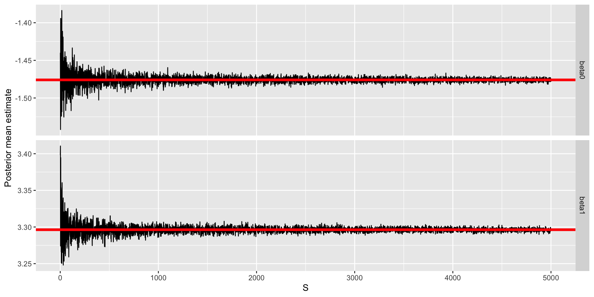

###True parameters
sigma <- 1.5 # true measurement error
beta <- matrix(c(-1.5, 3), ncol = 1) # true beta
###Simulation settings
n <- 100 # number of observations
p <- length(beta) - 1 # number of covariates
###Simulate data
set.seed(54) # set seed
X <- cbind(1, matrix(rnorm(n * p), ncol = p))
Y <- as.numeric(X %*% beta + rnorm(n, 0, sigma))Probability and Bayesian Statistics
Prof. Sam Berchuck
Jan 14, 2025
Agenda
Review of probability concepts
Introduction to Bayesian linear regression
Monte Carlo sampling
Probability
This is foundational material that you should have already learned in a previous course. I’m reviewing important concepts that are needed for Bayesian inference.
Review of probability
The goal of Bayesian statistics is to compute the posterior distribution (i.e., the uncertainty distribution of the parameters, \(\boldsymbol{\theta}\), after observing the data, \(\mathbf{Y}\))
This is the conditional distribution of \(\boldsymbol{\theta}\) given \(\mathbf{Y}\)
Therefore, we need to review the probability concepts that lead to the conditional distribution of one variable conditioned on another
Probability mass (pmf) and density (pdf) functions
Joint distributions
Marginal and conditional distributions
Random variables
\(X\) (capital) is a random variable
We want to compute the probability that \(X\) takes on a specific value \(x\) (lowercase)
- This is denoted \(P(X = x)\)
We also might want to compute the probability of \(X\) being in a set \(\mathcal A\)
- This is denoted \(P(X \in \mathcal A)\)
The set of possible values that \(X\) can take on is called its support, \(\mathcal S\)
Random variables - example
Example 1: \(X\) is the roll of a die
- The support is \(\mathcal S = \{1, 2, 3, 4, 5, 6\}\)
- \(P(X = 1) = 1/6\)
Example 2: \(X\) is a newborn baby’s weight
- The support is \(\mathcal S = (0, \infty)\)
- \(P(X \in [0, \infty]) = 1\)
What is probability?
Objective (associated with frequentist)
- \(P(X = x)\) as a purely mathematical statement
- If we repeatedly sampled \(X\), the the proportion of draws equal to \(x\) converges to \(P(X = x)\)
Subjective (associated with Bayesian)
- \(P(X = x)\) represents an individual’s degree of belief
- Often quantified as the amount an individual would be willing to wager that \(X\) will be \(x\)
A Bayesian analysis makes use of both of these concepts
What is uncertainty?
Aleatoric uncertainty (likelihood)
Uncontrollable randomness in the experiment
For example, the results of a fair coin flip can never be predicted with certainty
Epistemic uncertainty (prior/posterior)
- Uncertainty about a quantity that could theoretically be known
- For example, if we flipped a coin infinitely-many times we could know the true probability of a head
A Bayesian analysis makes use of both of these concepts
Probability versus statistics
Probability is the forward problem
- We assume we know how the data are being generated and compute the probability of events
- For example, what is the probability of flipping 5 straight heads if the coin is fair?
Statistics is the inverse problem
- We use data to learn about the data-generating mechanism
- For example, if we flipped five straight head, can we conclude the coin is biased?
Any statistical analysis obviously relies on probability
Univariate distributions
We often distinguish between discrete and continuous random variables
The random variable \(X\) is discrete if its support \(\mathcal S\) is countable
Examples:
\(X \in \{0, 1, 2, 3\}\) is the number of successes in 3 trials
\(X \in \{0, 1, 2, \ldots\}\) is the number of patients with COVID in Durham County
Univariate distributions
We often distinguish between discrete and continuous random variables
The random variable \(X\) is continuous if its support \(\mathcal S\) is uncountable
Examples with \(\mathcal S = (0, \infty)\):
\(X > 0\) is systolic blood pressure
\(X > 0\) is a patient’s BMI
Discrete univariate distributions
If \(X\) is discrete we describe its distribution with its probability mass function (pmf)
The pmf is \(f(x) = P(X = x)\)
The domain of \(X\) is the set of \(x\) with \(f(x) > 0\)
We must have \(f(x) \geq 0\) and \(\sum_x f(x) = 1\)
The mean is \(\mathbb E[X] = \sum_x x f(x)\)
The variance is \(\mathbb V(X) = \sum_x(x − \mathbb E[X])^2f(x)\)
The last three sums are over \(X\)’s domain
Parametric families of distributions
A statistical analysis typically proceeds by selecting a pmf that seems to match the distribution of a sample
We rarely know the pmf exactly, but we assume it is from a parametric family of distributions
For example, Binomial(10, 0.5) and Binomial(4, 0.1) are different but both from the binomial family
A family of distributions have the same equation for the pmf but differ by some unknown parameters \(\boldsymbol{\theta}\)
We must estimate these parameters
Continuous univariate distributions
If \(X\) is continuous we describe its distribution with the probability density function (pdf) \(f(x) \geq 0\)
Since there are uncountably many possible values, \(P(X = x) = 0\) for all \(x\),
Probabilities are computed as areas under the pdf curve \[P(a < X < b) = \int_a^b f(x)dx\]
Therefore, to be valid \(f(x)\) must satisfy \(f(x) \geq 0\) and \[P(−\infty < X < \infty) = \int_{-\infty}^{\infty} f(x)dx = 1\]
Continuous univariate distributions
The domain is the set of \(x\) values with \(f(x) > 0\)
The mean and the variance are defined similarly to the discrete case but with the sums replaced by integrals
The mean is \(\mathbb E[X] = \int x f(x)dx\)
The variance is \(\mathbb V(X) = \int (x − \mathbb E[X])^2 f(x)dx\)
Joint distributions
\(X = (X_1, \ldots, X_p)\) is a random vector (vectors and matrices should be in bold).
For notational convenience, let’s consider only \(p = 2\) random variables \(X\) and \(Y\).
\((X, Y)\) is discrete if it can take on a countable number of values, such as
\(X\) = number of hearts and \(Y\) = number of face cards.\((X, Y)\) is continuous if it can take on an uncountable number of values, such as
\(X\) = birthweight and \(Y\) = gestational age.
Discrete random variables
The joint pmf is \(f(x, y) = P(X = x, Y = y)\)
- \(\sum_x \sum_y f(x, y) = 1\)
The marginal pmf for \(X\) is \(f_X(x) = P(X = x) = \sum_y f(x, y)\)
The marginal pmf for \(Y\) is \(f_Y(y) = P(Y = y) = \sum_x f(x, y)\)
The marginal distribution is the same as univariate distribution as if we ignored the other variable
Discrete random variables
The conditional pmf of \(Y\) given \(X\) is \(f(y|x) = P(Y = y|X = x) = \frac{P(X = x, Y = y)}{P(X = x)} = \frac{f(x, y)}{f_X (x)}.\)
\(X\) and \(Y\) are independent if \(f(x, y) = f_X(x)f_Y(y)\) for all \(x\) and \(y\)
- Variables are dependent if they are not independent
Equivalently, \(X\) and \(Y\) are independent if \(f(x|y) = f_X(x)\) for all \(x\) and \(y\)
Discrete random variables
Notation: \(X_1, \dots, X_n \overset{\mathrm{iid}}{\sim} f(x)\) means that \(X_1, \ldots, X_n\) are independent and identically distributed
This implies the joint pmf is \[P(X_1 = x_1, \ldots, X_n = x_n) = \prod_{i=1}^n f(x_i)\]
The same notation and definitions of independence apply to continuous random variables
In this class, assume independence unless otherwise noted
Continuous random variables
Manipulating joint pdfs is similar to joint pmfs but sums are replaced by integrals
The joint pdf is denoted \(f(x, y)\)
Probabilities are computed as volume under the pdf: \[P((X, Y) ∈ A) = \int_A f(x, y)dxdy\] where \(A \subset \mathbb{R}^2\)
Continuous random variables
The marginal pdf of \(X\) is \(f_X(x) = \int f(x, y)dy\)
\(f_X\) is the univariate pdf for \(X\) as if we never considered \(Y\)
The conditional pdf of \(Y\) given \(X\) is \[f(y|x) = \frac{f(x, y)}{f_X (x)}\]
Proper: \(\int f(y|x)dy = \int \frac{f(x,y)}{f_X(x)}dy = \int \frac{f(x,y)dy}{f_X(x)} = 1\)
Defining joint distributions conditionally
Specifying joint distributions is hard
Every joint distribution can be written \(f(x, y) = f(y|x)f(x)\)
Therefore, any joint distribution can be defined by
\(X\)’s marginal distribution
The conditional distribution of \(Y|X\)
The joint problem reduces to two univariate problems
This idea forms the basis of hierarchical modeling
Bayes rule
Our course will focus on Bayes rule,
\[f(\boldsymbol{\theta}|\mathbf{Y}) = \frac{f(\mathbf{Y}|\boldsymbol{\theta})f(\boldsymbol{\theta})}{\int f(\mathbf{Y}|\boldsymbol{\theta})f(\boldsymbol{\theta})d\boldsymbol{\theta}}.\]
Bayes’ rule tells us how to update beliefs about \(\boldsymbol{\theta}\) given data \(\mathbf{Y}\).
Bayesian Linear Regression: Closed Form Posterior
Defining the model
Suppose we have an observation \(Y_i\) for subject \(i\) (\(i=1,\ldots,n\)), that is modeled as follows,
\[\begin{aligned} Y_i &= \beta_0 + x_{i1} \beta_1 + \cdots + x_{ip} \beta_p + \epsilon_i, \quad \epsilon_i \sim N(0, \sigma^2)\\ &= \mathbf{x}_i \boldsymbol{\beta} + \epsilon_i. \end{aligned}\]
- \(\mathbf{x}_i = (1, x_{i1},\ldots,x_{ip})\) is a \((p+1)\)-dimensional row vector of covariates (and intercept).
- \(\boldsymbol{\beta} = (\beta_0, \beta_1,\ldots,\beta_p)^\top\) is a \((p+1)\)-dimensional column vector of population regression parameters.
- \(\epsilon_i\) is a Gaussian measurement error term with variance \(\sigma^2\).
- For the purpose of today’s lecture, we assume \(\sigma\) is known.
Defining the likelihood
The individual likelihood contribution for subject \(i\) is given by, \[Y_i|\boldsymbol{\beta} \sim N(\mathbf{x}_i \boldsymbol{\beta}, \sigma^2) \Leftrightarrow f(Y_i|\boldsymbol{\beta}) = N(\mathbf{x}_i \boldsymbol{\beta}, \sigma^2),\] and the full data likelihood (or observed data likelihood) is given by, \[f(\mathbf{Y} | \boldsymbol{\beta}) = \prod_{i=1}^n f(Y_i|\boldsymbol{\beta}),\] where \(\mathbf{Y} = (Y_1,\ldots,Y_n)\).
Defining the likelihood (matrix version)
We can also write the likelihood directly, \[\mathbf{Y} | \boldsymbol{\beta} \sim N(\mathbf{X} \boldsymbol{\beta}, \sigma^2 \mathbf{I}_n),\] where \(\mathbf{X}\) is an \(n \times (p + 1)\) dimensional matrix with row \(\mathbf{x}_i\) and \(\mathbf{I}_n\) is an \(n\)-dimensional identity matrix. Thus, the mean of the observed data is modeled as a linear function of the parameters,
\[ \mathbb{E}[ \mathbf{Y} | \boldsymbol{\beta} ] = \begin{bmatrix} 1 & x_{12} & \ldots & x_{1p} \\ 1 & x_{22} & \ldots & x_{2p} \\ \vdots & \vdots & & \vdots\\ 1 & x_{n2} & \ldots & x_{np} \end{bmatrix} \begin{bmatrix} \beta_0\\ \beta_1\\ \vdots\\ \beta_p \end{bmatrix} = \mathbf{X} \boldsymbol{\beta}. \]
Linear regression estimation
- Ordinary least squares (OLS)
- Maximum likelihood estimation (MLE)
- \(\hat{\boldsymbol{\beta}}_{\text{OLS}} = \hat{\boldsymbol{\beta}}_{\text{MLE}} = (\mathbf{X}^\top \mathbf{X})^{-1}\mathbf{X}^\top \mathbf{Y}\)
Bayesian estimation
Estimation in a Bayesian setting is uniquely encoded through the posterior, \[\begin{aligned} f(\boldsymbol{\beta} | \mathbf{Y}) &= \frac{f(\mathbf{Y}, \boldsymbol{\beta})}{f(\mathbf{Y})}\\ &= \frac{f(\mathbf{Y} | \boldsymbol{\beta}) f(\boldsymbol{\beta})}{f(\mathbf{Y})}\\ &= \frac{f(\mathbf{Y} | \boldsymbol{\beta}) f(\boldsymbol{\beta})}{\int f(\mathbf{Y} | \boldsymbol{\beta}) f(\boldsymbol{\beta})d\boldsymbol{\beta}}. \end{aligned}\]
To compute the posterior distribution, we need the prior \(f(\boldsymbol{\beta})\).
Prior definition
Let’s assume that the prior for \(\boldsymbol{\beta}\) is Gassian,
\[f(\boldsymbol{\beta}) = N(\boldsymbol{\beta}_0,\sigma_{\beta}^2 \mathbf{I}_{p+1}).\]
- \(\boldsymbol{\beta}_0\) is the prior mean (i.e., our a-priori guess for the likely value of \(\boldsymbol{\beta}\))
- \(\sigma_{\beta}^2\) is the prior variance (i.e., encodes our certainty for our a-priori guess)
Computing the posterior
With this prior, the posterior can be found in closed-form. The posterior is Gaussian with the following moments: \[\begin{aligned} \mathbb{V}(\boldsymbol{\beta} | \mathbf{Y}) &= \left(\frac{\mathbf{I}_{p+1}}{\sigma_{\beta}^2} + \frac{\mathbf{X}^\top \mathbf{X}}{\sigma^2}\right)^{-1}\\ \mathbb{E}[\boldsymbol{\beta} | \mathbf{Y}] &= \left(\frac{\mathbf{I}_{p+1}}{\sigma_{\beta}^2} + \frac{\mathbf{X}^\top \mathbf{X}}{\sigma^2}\right)^{-1}\left(\frac{\boldsymbol{\beta}_0}{\sigma_{\beta}^2} + \frac{\mathbf{X}^\top \mathbf{Y}}{\sigma^2}\right) \end{aligned}\]
Techniques to find this posterior
Brute force: complete the square
Easy: kernel recognition
Definition
The part of the pdf/pmf that depends on the variable is called the kernel.
Example:
- The kernel of the multivariate normal pdf, \(\mathbf{Y} \sim N(\boldsymbol{\mu}, \boldsymbol{\Sigma})\), is
\[\begin{aligned} f(\mathbf{Y} | \boldsymbol{\mu}, \boldsymbol{\Sigma}) &\propto \exp\left\{-\frac{1}{2}\left[\left(\mathbf{Y} - \boldsymbol{\mu}\right)^\top \boldsymbol{\Sigma}^{-1}\left(\mathbf{Y} - \boldsymbol{\mu}\right)\right]\right\}\\ &\propto \exp\left\{-\frac{1}{2}\left[\mathbf{Y}^\top \boldsymbol{\Sigma}^{-1}\mathbf{Y} - 2\mathbf{Y}^\top \boldsymbol{\Sigma}^{-1} \boldsymbol{\mu}\right]\right\} \end{aligned}\]
Using the kernel to find the posterior
\[\begin{aligned} f(\boldsymbol{\beta} | \mathbf{Y}) &\propto f(\mathbf{Y} | \boldsymbol{\beta}) f(\boldsymbol{\beta})\\ &\propto \exp\left\{-\frac{1}{2}\left[\frac{\left(\mathbf{Y} - \mathbf{X}\boldsymbol{\beta}\right)^\top\left(\mathbf{Y} - \mathbf{X}\boldsymbol{\beta}\right)}{\sigma^2}\right]\right\}\\ &\quad \times \exp\left\{-\frac{1}{2}\left[\frac{\left(\boldsymbol{\beta} - \boldsymbol{\beta}_0\right)^\top\left(\boldsymbol{\beta}_0 - \boldsymbol{\beta}_0\right)}{\sigma_{\beta}^2}\right]\right\}\\ &\propto \exp\left\{-\frac{1}{2}\left[\boldsymbol{\beta}\left(\frac{\mathbf{X}^\top \mathbf{X}}{\sigma^2} + \frac{\mathbf{I}_n}{\sigma_{\beta}^2} \right)\boldsymbol{\beta} - 2\boldsymbol{\beta}^\top\left(\frac{\mathbf{X}^\top\mathbf{Y}}{\sigma^2} + \frac{\boldsymbol{\beta}_0}{\sigma_{\beta}^2}\right)\right]\right\}\\ &\propto \exp\left\{-\frac{1}{2}\left[\boldsymbol{\beta}\mathbf{A}\boldsymbol{\beta} - 2\boldsymbol{\beta}^\top\mathbf{a}\right]\right\} \end{aligned}\]
This is the kernel of a multivariate normal for \(\boldsymbol{\beta}\), with \(\mathbf{A} = \boldsymbol{\Sigma}^{-1}\) and \(\mathbf{a} = \boldsymbol{\Sigma}^{-1}\boldsymbol{\mu}\). It’s easy to see then that, \(f(\boldsymbol{\beta} | \mathbf{Y}) = N(\mathbf{A}^{-1}\mathbf{a},\mathbf{A}^{-1}).\)
Recall the kernel for the multivariate normal: \(\exp\left\{-\frac{1}{2}\left[\mathbf{Y}^\top \boldsymbol{\Sigma}^{-1}\mathbf{Y} - 2\mathbf{Y}^\top \boldsymbol{\Sigma}^{-1} \boldsymbol{\mu}\right]\right\}\)
Back to the posterior
With this prior, the posterior can be found in closed-form. The posterior is Gaussian with the following moments: \[\begin{aligned} \mathbb{V}(\boldsymbol{\beta} | \mathbf{Y}) &= \left(\frac{\mathbf{I}_{p+1}}{\sigma_{\beta}^2} + \frac{\mathbf{X}^\top \mathbf{X}}{\sigma^2}\right)^{-1}\\ \mathbb{E}[\boldsymbol{\beta} | \mathbf{Y}] &= \left(\frac{\mathbf{I}_{p+1}}{\sigma_{\beta}^2} + \frac{\mathbf{X}^\top \mathbf{X}}{\sigma^2}\right)^{-1}\left(\frac{\boldsymbol{\beta}_0}{\sigma_{\beta}^2} + \frac{\mathbf{X}^\top \mathbf{Y}}{\sigma^2}\right) \end{aligned}\]
- \(\sigma_{\beta}^2 \rightarrow \infty: \mathbb{E}[\boldsymbol{\beta} | \mathbf{Y}] = (\mathbf{X}^\top \mathbf{X})^{-1}\mathbf{X}^\top \mathbf{Y} = \hat{\boldsymbol{\beta}}_{\text{OLS}} = \hat{\boldsymbol{\beta}}_{\text{MLE}}\)
- \(\sigma^2 \rightarrow \infty: \mathbb{E}[\boldsymbol{\beta} | \mathbf{Y}] = \boldsymbol{\beta}_0\)
How can we use the posterior?
Let’s simulate some data:
Visualize simulated data


Inspecting the prior
First, we define hyperparameteters.


Comparison with OLS/MLE
Compute posterior moments
| parameter | true | bayes | ols/mle |
|---|---|---|---|
| intercept | -1.5 | -1.475944 | -1.476236 |
| slope | 3.0 | 3.296296 | 3.296984 |
Summarizing the posterior
Posteriors are often not available in closed form.
Even when we have a closed form posterior, it can be difficult to compute summaries of interest.
For example, consider \(P(\beta_j < c |\mathbf{Y})\). What are our options to calculate this probability?
Direct integration (by hand)
Numerical integration/software packages (e.g., \(\texttt{pnorm}\))
These methods work well for standard posterior quantities and distributions
Summarizing the posterior
However, sometimes we will want to summarize other aspects of a posterior distribution
\(P(\beta_j \in A|\mathbf{Y})\) for some arbitrary set \(A\)
Means and standard deviations of some function of \(\beta_j\), \(g\left(\beta_j\right)\)
The posterior distribution of functions of many parameters:
- \(|\beta_1 - \beta_2|\), \(\beta_1/\beta_2\), \(\max\left\{\beta_1,\ldots,\beta_p\right\}\), \(\dots\)
Obtaining exact values for these posterior quantities can be difficult or even impossible
What are our options?
Introduction to Monte Carlo approximation
Monte Carlo (MC) approximation
Integration method based on random sampling
The general principles and procedures remain relatively constant across a broad class of problems
Suppose we have \(S\) iid samples from our posterior distribution: \(\boldsymbol{\beta}^{\left(1\right)},\ldots,\boldsymbol{\beta}^{\left(S\right)}\stackrel{\text{iid}}{\sim}f\left(\boldsymbol{\beta}|\mathbf{Y}\right)\)
Then the empirical distribution of \(\left\{\boldsymbol{\beta}^{\left(1\right)},\ldots,\boldsymbol{\beta}^{\left(S\right)}\right\}\) would approximate \(f\left(\boldsymbol{\beta}|\mathbf{Y}\right)\), with the approximation improving as \(S\) increases
The empirical distribution of \(\left\{\boldsymbol{\beta}^{\left(1\right)},\ldots,\boldsymbol{\beta}^{\left(S\right)}\right\}\) is known as a MC approximation to \(f\left(\boldsymbol{\beta}|\mathbf{Y}\right)\)
MC approximation
Let \(g\left(\boldsymbol{\beta}\right)\) be (just about) any function of \(\boldsymbol{\beta}\). The law of large numbers says that if,
\[\boldsymbol{\beta}^{\left(1\right)},\ldots,\boldsymbol{\beta}^{\left(S\right)}\stackrel{\text{iid}}{\sim}f\left(\boldsymbol{\beta}|\mathbf{Y}\right),\] then, \[\frac{1}{S}\sum_{s=1}^S g\left(\boldsymbol{\beta}^{\left(s\right)}\right)\rightarrow \mathbb{E}\left[g\left(\boldsymbol{\beta}\right)|\mathbf{Y}\right]=\int g\left(\boldsymbol{\beta}\right)f\left(\boldsymbol{\beta}|\mathbf{Y}\right)d\boldsymbol{\beta},\] as \(S\rightarrow \infty\).
MC approximation
Implications (as \(S\rightarrow \infty\)):
\(\overline{\boldsymbol{\beta}}=\frac{1}{S}\sum_{s=1}^S \boldsymbol{\beta}^{\left(s\right)} \rightarrow \mathbb{E}\left[\boldsymbol{\beta}|\mathbf{Y}\right]\)
\(\frac{1}{S-1}\sum_{s=1}^S \left(\boldsymbol{\beta}^{\left(s\right)}-\overline{\boldsymbol{\beta}}\right)^2 \rightarrow \mathbb{V}\left(\boldsymbol{\beta}|\mathbf{Y}\right)\)
\(\frac{1}{S}\sum_{s=1}^S 1\left(\boldsymbol{\beta}^{\left(s\right)}\leq \mathbf{c}\right) \rightarrow P\left(\boldsymbol{\beta}\leq \mathbf{c} | \mathbf{Y}\right)\)
\(\alpha\)-quantile of \(\left\{\boldsymbol{\beta}^{\left(1\right)},\ldots,\boldsymbol{\beta}^{\left(S\right)}\right\}\rightarrow q_{\alpha}\)
Just about any aspect of the posterior distribution can be approximated arbitrarily exactly with a large enough MC sample
Posterior inference for arbitrary functions
Interest in the posterior distribution of a function of \(\boldsymbol{\beta}\), \(g\left(\boldsymbol{\beta}\right)\)
MC sampling plan:
Draw \(\boldsymbol{\beta}^{\left(1\right)}\) from \(f\left(\boldsymbol{\beta}|\mathbf{Y}\right)\), calculate \(g\left(\boldsymbol{\beta}^{\left(1\right)}\right)\)
\(\ldots\)
Draw \(\boldsymbol{\beta}^{\left(S\right)}\) from \(f\left(\boldsymbol{\beta}|\mathbf{Y}\right)\), calculate \(g\left(\boldsymbol{\beta}^{\left(S\right)}\right)\)
\(\Rightarrow g\left(\boldsymbol{\beta}^{\left(1\right)}\right),\ldots,g\left(\boldsymbol{\beta}^{\left(S\right)}\right)\stackrel{\text{iid}}{\sim}f\left(g\left(\boldsymbol{\beta}\right)|\mathbf{Y}\right)\)
Therefore, similar quantities can be estimated (posterior mean, variance, quantiles, distribution, etc.)
How many samples to take?
We can use a central limit theorem: \(\sqrt{S}\left(\overline{\boldsymbol{\beta}}-\mathbb{E}[\boldsymbol{\beta} | \mathbf{Y}]\right)/\sigma \stackrel{d}{\rightarrow} \text{N}\left(0,1\right)\),
where \(\sigma^2 = \mathbb{V}\left(\overline{\boldsymbol{\beta}}\right) = \frac{1}{S^2}\sum_{s=1}^S\mathbb{V}\left(\boldsymbol{\beta}^{(s)}\right) = \frac{1}{S}\mathbb{V}\left(\boldsymbol{\beta} | \mathbf{Y}\right)\).
\(\implies \overline{\boldsymbol{\beta}}\approx N\left(\mathbb{E}[\boldsymbol{\beta} | \mathbf{Y}],\sigma^2/S\right)\)
MC standard error: \(\sqrt{\frac{\widehat{\sigma}^2}{S}}\), \(\widehat{\sigma}^2=\frac{1}{S-1}\sum_{s=1}^S\left(\boldsymbol{\beta}^{\left(s\right)}-\overline{\boldsymbol{\beta}}\right)^2\)
Approximate 95% MC confidence interval for the posterior mean: \(\overline{\boldsymbol{\beta}} \pm 2\sqrt{\frac{\widehat{\sigma}^2}{S}}\)
Choose \(S\) large enough to report the posterior mean with your desired precision
Reporting MC standard errors for the posterior mean is a good way to indicate that \(S\) is large enough
Returning to linear regression
Let’s obtain \(S = 1,000\) samples from our posterior.
We can compute the posterior mean and variance.
Assessing accuracy

Additional posterior summaries
[1] -1.475117 3.292516 [,1] [,2]
2.5% -1.763541 3.017254
97.5% -1.188284 3.590548[1] 0.4358# summarizing arbitrary functions of the parameters
beta_new <- beta_samples[, 1] * beta_samples[, 2]^3
c(mean(beta_new), quantile(beta_new, probs = c(0.025, 0.975))) 2.5% 97.5%
-53.15221 -71.43863 -38.00378